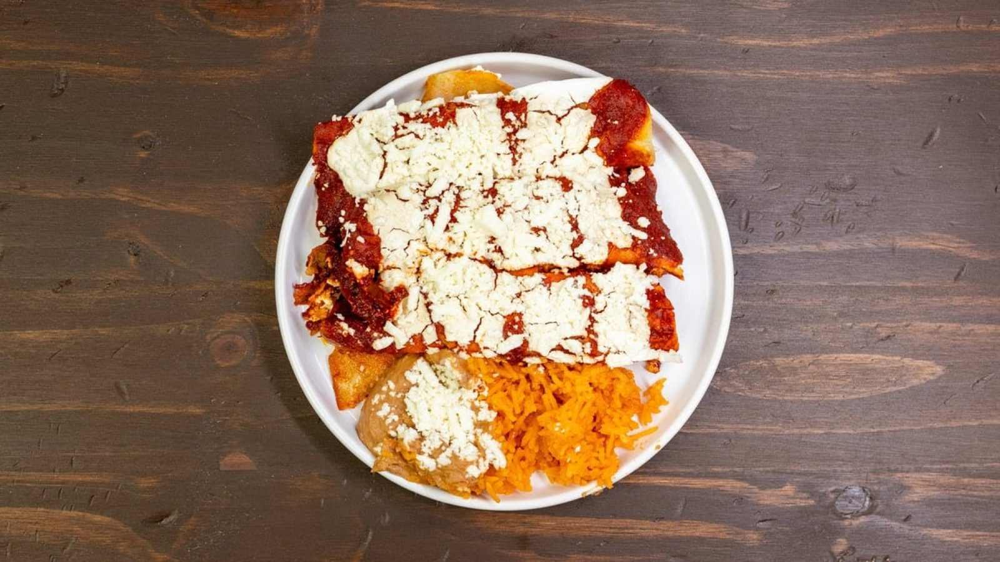

Tacos
Mini al pastor tacos with cilantro and onions, plus bacon and egg and chorizo and egg for breakfast.
Taquería · San Antonio, TX
Al pastor tacos, enchiladas Mexicana and a milpa burrito in a clean, cozy dining room.

What to order
Plates worth coming back for.
Mini al pastor tacos with cilantro and onions, plus bacon and egg and chorizo and egg for breakfast.

Enchiladas Mexicana with red sauce and sour cream, guisado plates and a milpa burrito with asada.

Served the way it should be. Order it with chilaquiles, crunchy with just enough salsa.


4.5 ★ · 1133 Google reviews
Came in unsure because of the mixed reviews, but was pleasantly surprised. We were greeted by everyone and our waitress was super friendly and helpful with the menu. Their cafe de olla was truly a cafe de olla. The spiciness and crunchiness from the chilaquiles were perfection with just enough salsa. The beans are very flavorful and compliment the dish.
The food was amazing Me and My Girlfriend Rosana ordered the bacon egg taco and chorizo and egg tacos. Both of them were full of flavor and very tasty. For myself i had The 5 mini tacos Al Pastor with cilantro and onions. I also had to try the Tostado Guiso Tinga De Pollo top with cheese Tomato’s and Avacado. It was so delicious. The waitress was very helpful with everything she was telling us.
The Milpa burrito with asada hits the spot. Good flavor and great service. The enchiladas Mexicana was served with sour cream on top and a red sauce. Great combo! This is definitely a return visit!
Nuestra historia
Plain storefront. Clean, warm dining room inside.
Friendly staff and homemade guisado plates.

Ven a vernos
114 Fredericksburg Rd, San Antonio, TX 78212
Open every day, 6 AM to 3 PM. Breakfast and lunch are covered.